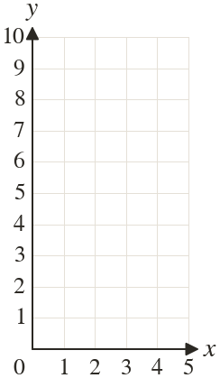

Westonbirt Maths · Linear Graphs
Plotting Linear Graphs from Tables
Name: ______________________ Date: ____________
1
Complete a table of values for for
2
Plot your points from question and draw the line 
3
Complete a table of values for for
4
Plot your points from question and draw the line

5
Leo completes a table for
At he writes
What is his mistake? Give the correct value.
At he writes
What is his mistake? Give the correct value.
Ext
Does lie on ? Does it lie on ?